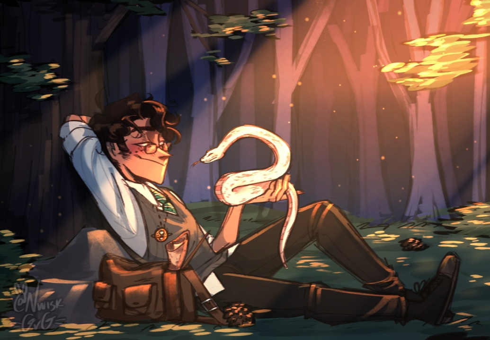
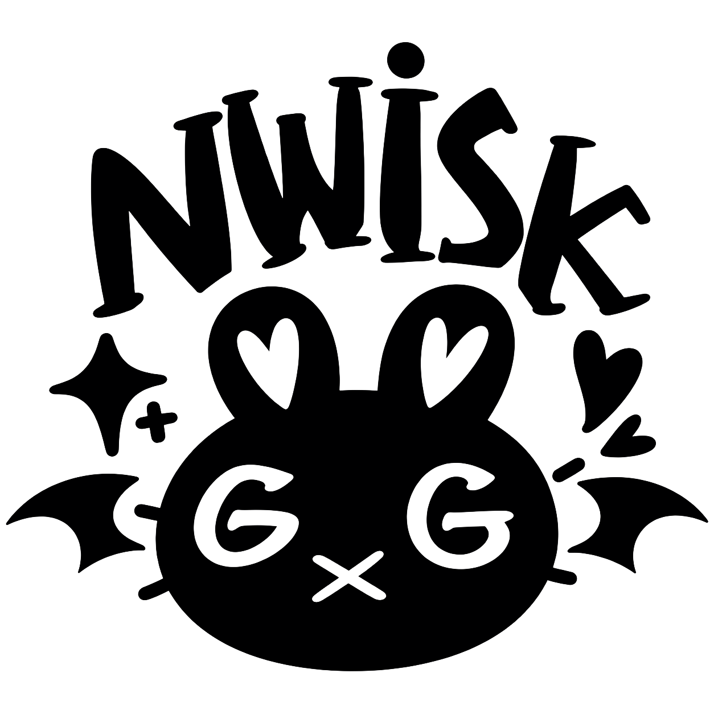
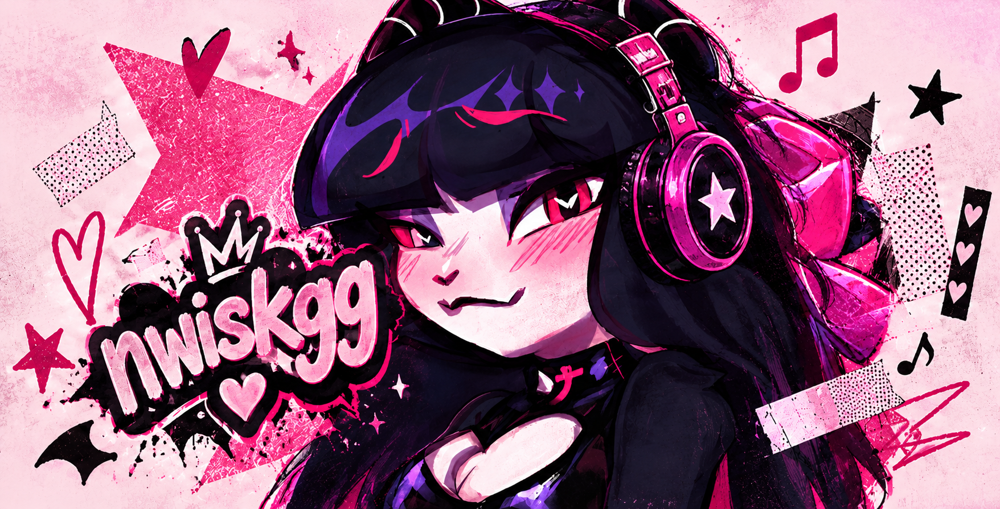
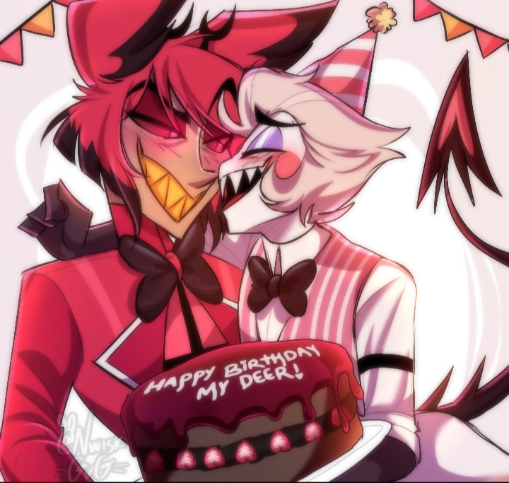
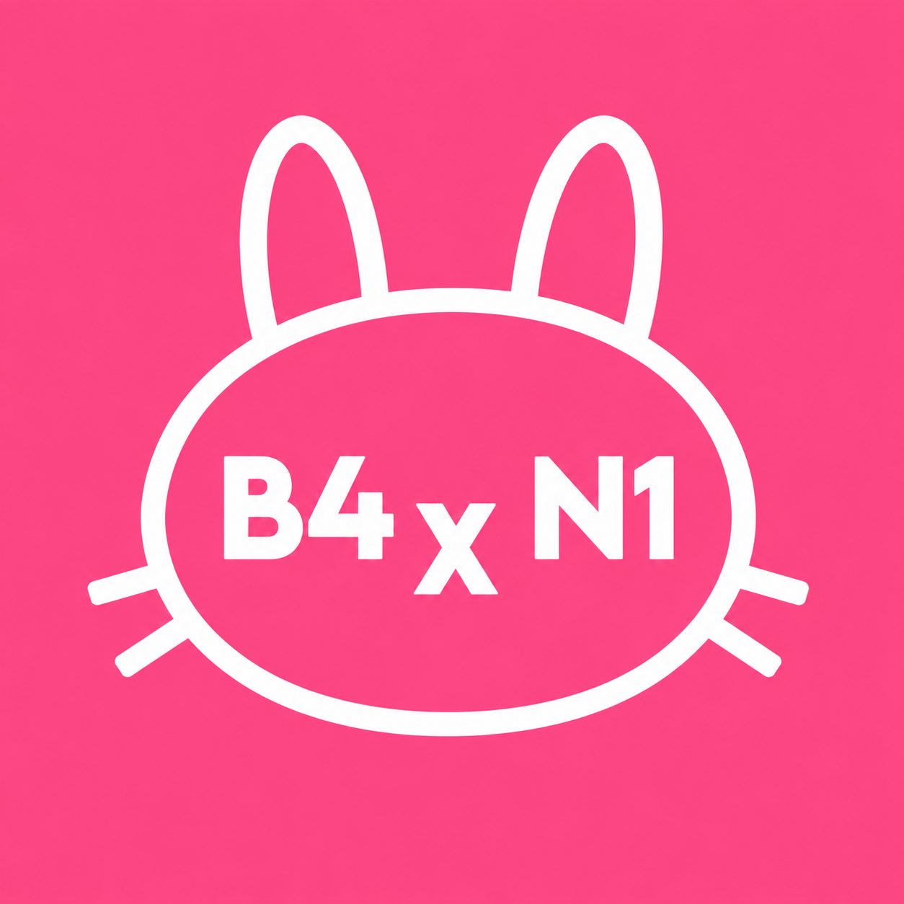

✦ARTE
♡

PENÉLOPEPORTFÓLIO CRIATIVO Q
Ilustração, dublagem e música se encontram aqui. Um universo criativo, com muita personalidade, criatividade e um toque de caos.
Conheça meu trabalho →

✦
♫
♫PRAZER, EU SOU A PENÉLOPE Q
Crio imagens, vozes e sons para dar forma às ideias que vivem na minha cabeça. Este é meu cantinho para experimentar, contar histórias e compartilhar o que faço.
Vamos conversar? →